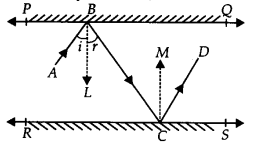
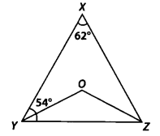
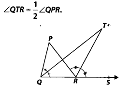

NCERT Solutions for Class 9 Maths Chapter 6 Lines and Angles Ex 6.1 are part of NCERT Solutions for Class 9 Maths. Here we have given NCERT Solutions for Class 9 Maths Chapter 6 Lines and Angles Ex 6.1.
NCERT Solutions for Class 9 Maths Chapter 6 Lines and Angles Ex 6.1
Ex 6.1 Class 9 Maths Question 1
In figure, lines AB and CD intersect at 0. If ∠AOC + ∠BOE = 70° and ∠BOD = 40°, find ∠BOE and reflex ∠COE.
Solution:
Since AB is a straight line,
∴ ∠AOC + ∠COE + ∠EOB = 180°
or (∠AOC + ∠BOE) + ∠COE = 180° or 70° + ∠COE = 180° [ ∵∠AOC + ∠BOE = 70° (Given)]
or ∠COE = 180° – 70° = 110°
∴ Reflex ∠COE = 360° – 110° = 250°
Also, AB and CD intersect at O.
∴∠COA = ∠BOD [Vertically opposite angles]
But ∠BOD = 40° [Given]
∴ ∠COA = 40°
Also, ∠AOC + ∠BOE = 70°
∴ 40° + ∠BOE = 70° or ∠BOE = 70° -40° = 30°
Thus, ∠BOE = 30° and reflex ∠COE = 250°.
Ex 6.1 Class 9 Maths Question 2.
In figure, lines XY and MN intersect at 0. If ∠POY = 90° , and a : b = 2 : 3. find c.
Solution:
Since XOY is a straight line.
∴ b+a+∠POY= 180°
But ∠POY = 90° [Given]
∴ b + a = 180° – 90° = 90° …(i)
Also a : b = 2 : 3 ⇒ b = \(\frac { 3a }{ 2 }\) …(ii)
Now from (i) and (ii), we get
\(\frac { 3a }{ 2 }\) + A = 90°
⇒ \(\frac { 5a }{ 2 }\) = 90°
⇒ a = \(\frac { { 90 }^{ \circ } }{ 5 } \times 2\quad =\quad { 36 }^{ \circ }\) = 36°
From (ii), we get
b = \(\frac { 3 }{ 2 }\) x 36° = 54°
Since XY and MN interstect at O,
∴ c = [a + ∠POY] [Vertically opposite angles]
or c = 36° + 90° = 126°
Thus, the required measure of c = 126°.
Ex 6.1 Class 9 Maths Question 3.
In figure, ∠PQR = ∠PRQ, then prove that ∠PQS = ∠PRT.
Solution:
ST is a straight line.
∴ ∠PQR + ∠PQS = 180° …(1) [Linear pair]
Similarly, ∠PRT + ∠PRQ = 180° …(2) [Linear Pair]
From (1) and (2), we have
∠PQS + ∠PQR = ∠PRT + ∠PRQ
But ∠PQR = ∠PRQ [Given]
∴ ∠PQS = ∠PRT
Ex 6.1 Class 9 Maths Question 4.
In figure, if x + y = w + ⇒, then prove that AOB is a line.
Solution:
Sum of all the angles at a point = 360°
∴ x + y + ⇒ + w = 360° or, (x + y) + (⇒ + w) = 360°
But (x + y) = (⇒ + w) [Given]
∴ (x + y) + (x + y) = 360° or,
2(x + y) = 360°
or, (x + y) = \(\frac { { 360 }^{ \circ } }{ 2 }\) = 180°
∴ AOB is a straight line.
Ex 6.1 Class 9 Maths Question 5.
In figure, POQ is a line. Ray OR is perpendicular to line PQ. OS is another ray lying between rays OP and OR. Prove that
Solution:
rara POQ is a straight line. [Given]
∴ ∠POS + ∠ROS + ∠ROQ = 180°
But OR ⊥ PQ
∴ ∠ROQ = 90°
⇒ ∠POS + ∠ROS + 90° = 180°
⇒ ∠POS + ∠ROS = 90°
⇒ ∠ROS = 90° – ∠POS … (1)
Now, we have ∠ROS + ∠ROQ = ∠QOS
⇒ ∠ROS + 90° = ∠QOS
⇒ ∠ROS = ∠QOS – 90° ……(2)
Adding (1) and (2), we have
2 ∠ROS = (∠QOS – ∠POS)
∴ ∠ROS = \(\frac { 1 }{ 2 } (\angle QOS-\angle POS)\)
Ex 6.1 Class 9 Maths Question 6.
It is given that ∠XYZ = 64° and XY is produced to point P. Draw a figure from the given information. If ray YQ bisects ∠ZYP, find ∠XYQ and reflex ∠QYP.
Solution:
XYP is a straight line.
∴ ∠XYZ + ∠ZYQ + ∠QYP = 180°
⇒ 64° + ∠ZYQ + ∠QYP = 180°
[∵ ∠XYZ = 64° (given)]
⇒ 64° + 2∠QYP = 180°
[YQ bisects ∠ZYP so, ∠QYP = ∠ZYQ]
⇒ 2∠QYP = 180° – 64° = 116°
⇒ ∠QYP = \(\frac { { 116 }^{ \circ } }{ 2 }\) = 58°
∴ Reflex ∠QYP = 360° – 58° = 302°
Since ∠XYQ = ∠XYZ + ∠ZYQ
⇒ ∠XYQ = 64° + ∠QYP [∵∠XYZ = 64°(Given) and ∠ZYQ = ∠QYP]
⇒ ∠XYQ = 64° + 58° = 122° [∠QYP = 58°]
Thus, ∠XYQ = 122° and reflex ∠QYP = 302°.
NCERT Solutions for Class 9 Maths Chapter 6 Lines and Angles (रेखाएँ और कोण) (Hindi Medium) Ex 6.1


NCERT Solutions for Class 9 Maths Chapter 6 Lines and Angles Ex 6.2
Ex 6.2 Class 9 Maths Question 1.
In figure, find the values of x and y and then show that AB || CD.
Solution:
In the figure, we have CD and PQ intersect at F.
∴ y = 130° …(1)
[Vertically opposite angles]
Again, PQ is a straight line and EA stands on it.
∠AEP + ∠AEQ = 180° [Linear pair]
or 50° + x = 180°
⇒ x = 180° – 50° = 130° …(2)
From (1) and (2), x = y
As they are pair of alternate interior angles.
∴ AB || CD
Ex 6.2 Class 9 Maths Question 2.
In figure, if AB || CD, CD || EF and y : z = 3 : 7, find x.
Solution:
AB || CD, and CD || EF [Given]
∴ AB || EF
∴ x = z [Alternate interior angles] ….(1)
Again, AB || CD
⇒ x + y = 180° [Co-interior angles]
⇒ z + y = 180° … (2) [By (1)]
But y : z = 3 : 7
z = \(\frac { 7 }{ 3 }\) y = \(\frac { 7 }{ 3 }\)(180°- z) [By (2)]
⇒ 10z = 7 x 180°
⇒ z = 7 x 180° /10 = 126°
From (1) and (3), we have
x = 126°.
Ex 6.2 Class 9 Maths Question 3.
In figure, if AB || CD, EF ⊥ CD and ∠GED = 126°, find ∠AGE, ∠GEF and ∠FGE.
Solution:
AB || CD and GE is a transversal.
∴ ∠AGE = ∠GED [Alternate interior angles]
But ∠GED = 126° [Given]
∴∠AGE = 126°
Also, ∠GEF + ∠FED = ∠GED
or ∠GEF + 90° = 126° [∵ EF ⊥ CD (given)]
x = z [Alternate interior angles]… (1) Again, AB || CD
⇒ x + y = 180° [Co-interior angles]
∠GEF = 126° -90° = 36°
Now, AB || CD and GE is a transversal.
∴ ∠FGE + ∠GED = 180° [Co-interior angles]
or ∠FGE + 126° = 180°
or ∠FGE = 180° – 126° = 54°
Thus, ∠AGE = 126°, ∠GEF=36° and ∠FGE = 54°.
Ex 6.2 Class 9 Maths Question 4.
In figure, if PQ || ST, ∠ PQR = 110° and ∠ RST = 130°, find ∠QRS.
Solution:
Draw a line EF parallel to ST through R.
Since PQ || ST [Given]
and EF || ST [Construction]
∴ PQ || EF and QR is a transversal
⇒ ∠PQR = ∠QRF [Alternate interior angles] But ∠PQR = 110° [Given]
∴∠QRF = ∠QRS + ∠SRF = 110° …(1)
Again ST || EF and RS is a transversal
∴ ∠RST + ∠SRF = 180° [Co-interior angles] or 130° + ∠SRF = 180°
⇒ ∠SRF = 180° – 130° = 50°
Now, from (1), we have ∠QRS + 50° = 110°
⇒ ∠QRS = 110° – 50° = 60°
Thus, ∠QRS = 60°.
Ex 6.2 Class 9 Maths Question 5.
In figure, if AB || CD, ∠APQ = 50° and ∠PRD = 127°, find x and y.
Solution:
We have AB || CD and PQ is a transversal.
∴ ∠APQ = ∠PQR
[Alternate interior angles]
⇒ 50° = x [ ∵ ∠APQ = 50° (given)]
Again, AB || CD and PR is a transversal.
∴ ∠APR = ∠PRD [Alternate interior angles]
⇒ ∠APR = 127° [ ∵ ∠PRD = 127° (given)]
⇒ ∠APQ + ∠QPR = 127°
⇒ 50° + y = 127° [ ∵ ∠APQ = 50° (given)]
⇒ y = 127°- 50° = 77°
Thus, x = 50° and y = 77°.
Ex 6.2 Class 9 Maths Question 6.
In figure, PQ and RS are two mirrors placed parallel to each other. An incident ray AB strikes the mirror PQ at B, the reflected ray moves along the path BC and strikes the mirror RS at C and again reflects back along CD. Prove that AB || CD.
Solution:
Draw ray BL ⊥PQ and CM ⊥ RS

∵ PQ || RS ⇒ BL || CM
[∵ BL || PQ and CM || RS]
Now, BL || CM and BC is a transversal.
∴ ∠LBC = ∠MCB …(1) [Alternate interior angles]
Since, angle of incidence = Angle of reflection
∠ABL = ∠LBC and ∠MCB = ∠MCD
⇒ ∠ABL = ∠MCD …(2) [By (1)]
Adding (1) and (2), we get
∠LBC + ∠ABL = ∠MCB + ∠MCD
⇒ ∠ABC = ∠BCD
i. e., a pair of alternate interior angles are equal.
∴ AB || CD.
NCERT Solutions for Class 9 Maths Chapter 6 Lines and Angles Ex 6.3
Ex 6.3 Class 9 Maths Question 1.
In figure, sides QP and RQ of ∆PQR are produced to points S and T, respectively. If ∠SPR = 135° and ∠PQT = 110°, find ∠PRQ.
Solution:
We have, ∠TQP + ∠PQR = 180°
[Linear pair]
⇒ 110° + ∠PQR = 180°
⇒ ∠PQR = 180° – 110° = 70°
Since, the side QP of ∆PQR is produced to S.
⇒ ∠PQR + ∠PRQ = 135°
[Exterior angle property of a triangle]
⇒ 70° + ∠PRQ = 135° [∠PQR = 70°]
⇒ ∠PRQ = 135° – 70° ⇒ ∠PRQ = 65°
Ex 6.3 Class 9 Maths Question 2.
In figure, ∠X = 62°, ∠XYZ = 54°, if YO and ZO are the bisectors of ∠XYZ and ∠XZY respectively of ∆XYZ, find ∠OZY and ∠YOZ.

Solution:
In ∆XYZ, we have ∠XYZ + ∠YZX + ∠ZXY = 180°
[Angle sum property of a triangle]
But ∠XYZ = 54° and ∠ZXY = 62°
∴ 54° + ∠YZX + 62° = 180°
⇒ ∠YZX = 180° – 54° – 62° = 64°
YO and ZO are the bisectors of ∠XYZ and ∠XZY respectively.
∴ ∠OYZ = \(\frac { 1 }{ 2 } \angle XYZ\) = \(\frac { 1 }{ 2 }\)(54°) = 27°
and ∠OZY = \(\frac { 1 }{ 2 } \angle YZX\) = \(\frac { 1 }{ 2 }\)(64°) = 32°
Now, in ∆OYZ, we have
∠YOZ + ∠OYZ + ∠OZY = 180°
[Angle sum property of a triangle]
⇒ ∠YOZ + 27° + 32° = 180°
⇒ ∠YOZ = 180° -27° – 32° = 121°
Thus, ∠OZY = 32° and ∠YOZ = 121°
Ex 6.3 Class 9 Maths Question 3.
In figure, if AB || DE, ∠BAC = 35° and ∠CDE = 539 , find ∠DCE.
Solution:
AB || DE and AE is a transversal.
So, ∠BAC = ∠AED
[Alternate interior angles]
and ∠BAC = 35° [Given]
∴ ∠AED = 35°
Now, in ∆CDE, we have ∠CDE + ∠DEC + ∠DCE = 180°
{Angle sum property of a triangle]
∴ 53° + 35° + ∠DCE =180°
[∵ ∠DEC = ∠AED = 35° and∠CDE = 53° (Given)]
⇒ ∠DCE = 180° – 53° – 35° = 92°
Thus, ∠DCE = 92°
Ex 6.3 Class 9 Maths Question 4.
In figure, if lines PQ and RS intersect at point T, such that ∠ PRT = 40°, ∠ RPT = 95° and ∠TSQ = 75°, find ∠ SQT.
Solution:
In ∆PRT, we have ∠P + ∠R + ∠PTR = 180°
[Angle sum property of a triangle]
⇒ 95° + 40° + ∠PTR =180°
[ ∵ ∠P = 95°, ∠R = 40° (given)]
⇒ ∠PTR = 180° – 95° – 40° = 45°
But PQ and RS intersect at T.
∴ ∠PTR = ∠QTS
[Vertically opposite angles]
∴ ∠QTS = 45° [ ∵ ∠PTR = 45°]
Now, in ∆ TQS, we have ∠TSQ + ∠STQ + ∠SQT = 180°
[Angle sum property of a triangle]
∴ 75° + 45° + ∠SQT = 180° [ ∵ ∠TSQ = 75° and ∠STQ = 45°]
⇒ ∠SQT = 180° – 75° – 45° = 60°
Thus, ∠SQT = 60°
Ex 6.3 Class 9 Maths Question 5.
In figure, if PQ ⊥ PS, PQ||SR, ∠SQR = 2S° and ∠QRT = 65°, then find the values of x and y.
Solution:
In ∆ QRS, the side SR is produced to T.
∴ ∠QRT = ∠RQS + ∠RSQ
[Exterior angle property of a triangle]
But ∠RQS = 28° and ∠QRT = 65°
So, 28° + ∠RSQ = 65°
⇒ ∠RSQ = 65° – 28° = 37°
Since, PQ || SR and QS is a transversal.
∴ ∠PQS = ∠RSQ = 37°
[Alternate interior angles]
⇒ x = 37°
Again, PQ ⊥ PS ⇒ AP = 90°
Now, in ∆PQS,
we have ∠P + ∠PQS + ∠PSQ = 180°
[Angle sum property of a triangle]
⇒ 90° + 37° + y = 180°
⇒ y = 180° – 90° – 37° = 53°
Thus, x = 37° and y = 53°
Ex 6.3 Class 9 Maths Question 6.
In figure, the side QR of ∆PQR is produced to a point S. If the bisectors of ∠PQR and ∠PRS meet at point T, then prove that

Solution:
In ∆PQR, side QR is produced to S, so by exterior angle property,
∠PRS = ∠P + ∠PQR
⇒ \(\frac { 1 }{ 2 }\)∠PRS = \(\frac { 1 }{ 2 }\)∠P + \(\frac { 1 }{ 2 }\)∠PQR
⇒ ∠TRS = \(\frac { 1 }{ 2 }\)∠P + ∠TQR …(1)
[∵ QT and RT are bisectors of ∠PQR and ∠PRS respectively.]
Now, in ∆QRT, we have
∠TRS = ∠TQR + ∠T …(2)
[Exterior angle property of a triangle]
From (1) and (2),
we have ∠TQR + \(\frac { 1 }{ 2 }\)∠P = ∠TQR + ∠T
⇒ \(\frac { 1 }{ 2 }\)∠P = ∠T
⇒ \(\frac { 1 }{ 2 }\)∠QPR = ∠QTR or ∠QTR = \(\frac { 1 }{ 2 }\)∠QPR
NCERT Solutions for Class 9 Maths All Chapters
- Chapter 1 Number systems
- Chapter 2 Polynomials
- Chapter 3 Coordinate Geometry
- Chapter 4 Linear Equations in Two Variables
- Chapter 5 Introduction to Euclid Geometry
- Chapter 6 Lines and Angles
- Chapter 7 Triangles
- Chapter 8 Quadrilaterals
- Chapter 9 Areas of Parallelograms and Triangles
- Chapter 10 Circles
- Chapter 11 Constructions
- Chapter 12 Heron’s Formula
- Chapter 13 Surface Areas and Volumes
- Chapter 14 Statistics
- Chapter 15 Probability
- Class 9 Maths (Download PDF)
We hope the NCERT Solutions for Class 9 Maths Chapter 6 Lines and Angles Ex 6.1 help you. If you have any query regarding NCERT Solutions for Class 9 Maths Chapter 6 Lines and Angles Ex 6.1, drop a comment below and we will get back to you at the earliest.